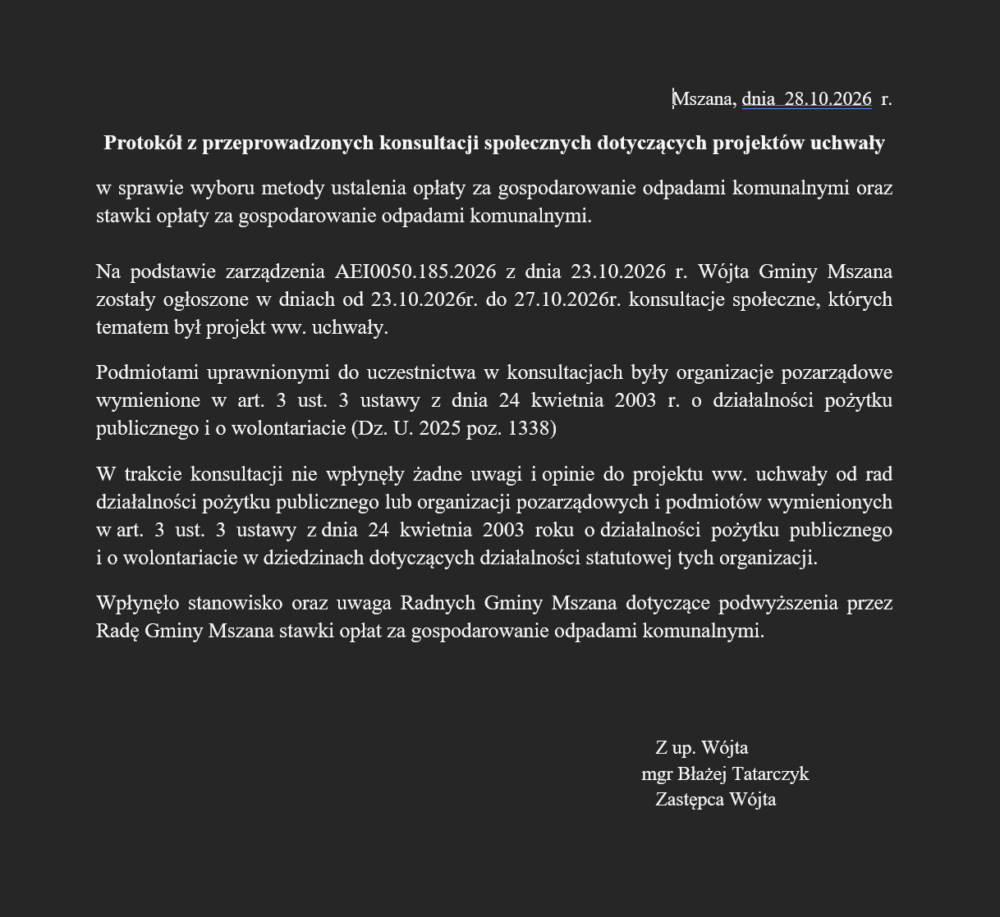

Materiały mieszkańców · Konsultacje społeczne
Materiał z konsultacji projektu uchwały o opłatach za odpady w Gminie Mszana (stanowiska radnych)
W ramach konsultacji społecznych dotyczących projektu uchwały Rady Gminy Mszana w sprawie wyboru metody ustalenia opłaty za gospodarowanie odpadami komunalnymi oraz stawki opłaty (projektowana stawka: 40,00 zł miesięcznie od mieszkańca) udostępniono materiały od radnych. Poniżej publikujemy pełną treść zgłoszonych uwag.
Jak czytać ten materiał. Fragmenty w blokach oznaczonych „Oryginalny tekst” są dosłownym tekstem stanowisk skierowanych do Urzędu Gminy Mszana przez przedstawicieli mieszkańców – radnych Gminy Mszana – w czasie trwających konsultacji społecznych. Zachowano treść i kolejność argumentów. Komentarz Mszana.info jest oznaczony jako opinia i podpisany po stronie serwisu, a informacje o źródłach wyodrębniono w osobnej sekcji.
Przedstawione stanowiska dotyczą dwóch kwestii: wysokości stawki opłaty (wzrost z 39 zł obowiązujących od początku 2026 r. do projektowanych 40 zł) oraz sposobu przeprowadzenia konsultacji społecznych.
Oryginalne stanowiska radnych
1. Uwaga Bergera Sebastiana
W Imieniu Mieszkańców Gminy Mszana
UWAGA do projektu uchwały Rady Gminy Mszana w sprawie wyboru metody ustalenia opłaty za gospodarowanie odpadami komunalnymi oraz stawki opłaty za gospodarowanie odpadami komunalnymi
Działając w interesie społeczności lokalnej Gminy Mszana, niniejszym zgłaszam uwagę do przedstawionego projektu uchwały ustalającego nową stawkę opłaty za gospodarowanie odpadami komunalnymi w wysokości 40,00 zł miesięcznie od mieszkańca (w przypadku zbiórki selektywnej) i wnoszę o odrzucenie projektu uchwały w przedłożonym kształcie bądź jej ponowną weryfikację.
Uzasadnienie
W uzasadnieniu do projektu wskazano, że kwota najkorzystniejszej oferty przetargowej wraz z kosztami administracyjnymi nie bilansuje się z dotychczas pobieraną opłatą, co ma uzasadniać wzrost stawki do 40,00 zł. W tym miejscu należy postawić zasadnicze pytanie: czy kwota po nowo rozstrzygniętym przetargu jest niższa, wyższa, czy też zbliżona do kwoty przyjętej w kalkulacjach na rok 2026?
Jeżeli oferta wyłoniona w przetargu jest niższa niż koszty lub stawka kalkulacyjna z roku 2026 (która wynosiła 39,00 zł), gmina nie ma podstaw do podnoszenia opłat obciążających mieszkańców, a wręcz powinna dążyć do utrzymania lub obniżenia dotychczasowej kwoty.
Każda podwyżka – nawet nominalnie o 1,00 zł (co przy skali gospodarstwa domowego np. 4-osobowego daje wzrost o 48 zł rocznie) – w obliczu dotychczasowych kosztów utrzymania stanowi dodatkowe obciążenie dla mieszkańców Gminy Mszana. Skoro od początku 2026 roku stawka wynosiła 39,00 zł, oczekiwalibyśmy od organów wykonawczych gminy maksymalnej determinacji w szukaniu oszczędności po stronie kosztów administracyjnych i optymalizacji systemu, zamiast automatycznego przerzucania kosztów na mieszkańców.
Z poważaniem
Berger Sebastian
2. Stanowisko Radnego Gminy Mszana – Piotra Gonsiora
STANOWISKO MIESZKAŃCA / RADNEGO GMINY MSZANA
w ramach konsultacji społecznych dotyczących projektów uchwał w sprawie opłat za gospodarowanie odpadami komunalnymi
Działając na podstawie Zarządzenia nr AEI.0050.185.2026 Wójta Gminy Mszana z dnia 23 października 2026 r., zgłaszam oficjalną uwagę oraz stanowczy sprzeciw wobec:
- Podniesienia stawki opłaty za gospodarowanie odpadami komunalnymi do kwoty 40 zł od osoby.
- Braku adekwatnej waloryzacji zwolnienia z części opłaty z tytułu kompostowania bioodpadów.
- Nieprzedstawienia mieszkańcom powiązanych zmian w regulaminie Punktu Selektywnej Zbiórki Odpadów Komunalnych (PSZOK).
UZASADNIENIE
I. Wzrost stawki podstawowej i pozorność konsultacji
1. Nadmierne obciążenie finansowe: Proponowana opłata w wysokości 40 zł miesięcznie od jednego mieszkańca stanowi wzrost kosztów i nadmierne obciążenie dla budżetów domowych (dla 4-osobowej rodziny to wydatek aż 1920 zł rocznie).
2. Brak transparentności kosztów: W udostępnionych materiałach konsultacyjnych zabrakło rzetelnej i transparentnej kalkulacji ekonomicznej, która w świetle art. 6k ust. 2 ustawy o utrzymaniu czystości i porządku w gminach uzasadniałaby tak wysoki koszt funkcjonowania systemu.
3. Pozorność konsultacji społecznych i rażące skrócenie terminów: Wyznaczenie zaledwie 4 dni na konsultacje społeczne – w tym dni weekendowych – przy jednoczesnym braku załączenia projektu uchwały do publicznego ogłoszenia, w praktyce drastycznie skróciło czas trwania procedury. Uniemożliwiło to mieszkańcom realny dostęp do dokumentów oraz weryfikację kalkulacji finansowej. Działanie to ma charakter pozorny i wprost godzi w zasady partycypacji społecznej wynikające z art. 5a ustawy o samorządzie gminnym.
II. Fikcyjna wysokość ulgi za kompostownik (Wniosek o zmianę wysokości zwolnienia)
Wnoszę o proporcjonalne zwiększenie wysokości zwolnienia z części opłaty dla właścicieli nieruchomości jednorodzinnych kompostujących bioodpady w kompostowniku przydomowym.
1. Naruszenie zasady proporcjonalności: Pozostawienie tej ulgi na dotychczasowym, niezmiennym od 2021 roku poziomie 1 zł – w zderzeniu z planowaną podwyżką stawki zasadniczej do 40 zł – jest rażąco niesprawiedliwe. Zgodnie z art. 6k ust. 4a ustawy o utrzymaniu czystości i porządku w gminach, rada gminy ustanawiając zwolnienie, musi wziąć pod uwagę udział masy bioodpadów w całości śmieci. Zamrożenie ulgi przy jednoczesnym drastycznym wzroście kosztów utylizacji 1 tony frakcji BIO oraz wysokiej inflacji powoduje, że ulga staje się fikcyjna.
2. Realne odciążenie systemu i oszczędności: Mieszkańcy kompostujący odpady całkowicie zdejmują z gminy obowiązek zagospodarowania najcięższej frakcji śmieci. Dodatkowo osoby te nie pobierają od gminy worków na odpady BIO (zgodnie z limitem 10 sztuk na zbiórkę, przy około 21 zbiórkach w roku, daje to oszczędność do 210 worków na jedną posesję rocznie).
3. Brak motywacji ekonomicznej: Utrzymanie ulgi w kwocie 1 zł całkowicie pozbawia mieszkańców motywacji do prowadzenia kompostowników. W konsekwencji doprowadzi to do zwiększenia strumienia odpadów BIO trafiających do systemu i dalszego wzrostu kosztów dla całej gminy.
III. Brak przedstawienia regulaminu PSZOK i naruszenie zasad rzetelności
Wnoszę sprzeciw wobec procedowania podwyżki stawki bez jednoczesnego przedstawienia mieszkańcom do konsultacji oraz publicznego wglądu aktualnego, jednolitego regulaminu PSZOK. Domagam się niezwłocznego opublikowania tekstu jednolitego regulaminu PSZOK na stronie internetowej Urzędu Gminy, w Biuletynie Informacji Publicznej (BIP) oraz umieszczenia go w gablocie ogłoszeniowej na terenie samego punktu PSZOK.
1. Naruszenie zasad rzetelnych konsultacji: Wraz z projektami uchwał zmieniających nie przedstawiono regulaminu PSZOK jako tekstu jednolitego, co uniemożliwia mieszkańcom realny dostęp do obowiązujących przepisów i ogranicza prawo do pełnej oceny skutków uchwały.
2. Wpływ regulaminu na adekwatność stawki: Zakres usług świadczonych przez PSZOK (w tym ewentualne limity ilościowe na odpady budowlane, rozbiórkowe czy gabaryty) bezpośrednio wpływa na ocenę, czy nowa stawka 40 zł jest w ogóle adekwatna do oferowanego przez gminę standardu.
3. Utrudnienia w codziennym korzystaniu: Brak fizycznego regulaminu w gablocie na terenie PSZOK oraz brak aktualnego tekstu na stronach gminy stanowi realne utrudnienie dla mieszkańców chcących prawidłowo segregować odpady. Bez powszechnego dostępu do tych zasad system staje się nieczytelny.
PODSUMOWANIE
Jako mieszkaniec oraz Radny Gminy Mszana, dbając o transparentność działań samorządu oraz uzasadniony interes ekonomiczny i proekologiczny mieszkańców, wnoszę o odrzucenie projektu uchwały w obecnym kształcie. Domagam się przedstawienia pełnej i jawnej kalkulacji kosztów systemu wraz z jednolitym regulaminem PSZOK oraz adekwatnego, proporcjonalnego podniesienia ulgi za kompostowanie odpadów.
Z wyrazami szacunku
Piotr Gonsior
Protokół z konsultacji podpisany przez zastępcę Wójta

Treść tekstowa protokołu (dostępność)
Mszana, dnia 28.10.2026 r.
Protokół z przeprowadzonych konsultacji społecznych dotyczących projektów uchwały
w sprawie wyboru metody ustalenia opłaty za gospodarowanie odpadami komunalnymi oraz stawki opłaty za gospodarowanie odpadami komunalnymi.
Na podstawie zarządzenia AEI0050.185.2026 z dnia 23.10.2026 r. Wójta Gminy Mszana zostały ogłoszone w dniach od 23.10.2026 r. do 27.10.2026 r. konsultacje społeczne, których tematem był projekt ww. uchwały.
Podmiotami uprawnionymi do uczestnictwa w konsultacjach były organizacje pozarządowe wymienione w art. 3 ust. 3 ustawy z dnia 24 kwietnia 2003 r. o działalności pożytku publicznego i o wolontariacie (Dz. U. 2025 poz. 1338).
W trakcie konsultacji nie wpłynęły żadne uwagi i opinie do projektu ww. uchwały od rad działalności pożytku publicznego lub organizacji pozarządowych i podmiotów wymienionych w art. 3 ust. 3 ustawy z dnia 24 kwietnia 2003 roku o działalności pożytku publicznego i o wolontariacie w dziedzinach dotyczących działalności statutowej tych organizacji.
Wpłynęło stanowisko oraz uwaga Radnych Gminy Mszana dotyczące podwyższenia przez Radę Gminy Mszana stawki opłat za gospodarowanie odpadami komunalnymi.
Z up. Wójta
mgr Błażej Tatarczyk
Zastępca Wójta
Dokument można znaleźć pod linkiem: Protokół z przeprowadzonych konsultacji — Urząd Gminy Mszana
Pytanie administracji portalu Mszana.info
Dlaczego protokół nie przedstawia uwag nadesłanych przez radnych?
Komentarz Mszana.info
Opinia Komentarz Zespołu Mszana.info — nie stanowisko radnych ani Urzędu Gminy.
Przedstawione stanowiska radnych wskazują na sprzeciw wobec podwyżki stawki do 40 zł miesięcznie (wzrost z 39 zł obowiązujących od początku 2026 r.). Kluczowe kwestie to:
- Koszty i kalkulacja: wniosek o weryfikację, czy oferta przetargowa uzasadnia wzrost oraz postulat szukania oszczędności w administracji.
- Konsultacje: zwrócenie uwagi na 4-dniowy termin (w tym weekendy) oraz brak załączonego projektu uchwały i jednolitego regulaminu PSZOK.
- Ulga za kompostownik: postulat podniesienia ulgi (obecnie 1 zł od 2021 r.), która w obliczu inflacji i wzrostu kosztów utylizacji BIO jest uznawana za fikcyjną.
- PSZOK: wniosek o natychmiastową publikację jednolitego regulaminu w BIP, na stronie Urzędu oraz w gablocie PSZOK.
Informacja dodatkowa. Podczas ostatniej sesji, która odbyła się 29 października 2026 r., procedowanie nad tą uchwałą zostało zdjęte z obrad. Wniosek o wycofanie uchwały przedstawiła Pani sekretarz Gminy Mszana Joanna Szymańska w początkowych minutach sesji (transmisja sesji w eSesja), która jako przyczynę podała błędy formalne przy przeprowadzeniu konsultacji społecznych. Jedna z radnych zadała pytanie, dlaczego to zostało wycofane. Odpowiedzi udzieliła Pani Sekretarz: projekt tej uchwały nie został zamieszczony w BIP i na stronie internetowej; został zamieszczony dopiero w późniejszym okresie, co byłoby niezgodne z zarządzeniem.
Informacje o źródłach
40 zł było stawką projektowaną, nie stawką obowiązującą w czasie konsultacji. Projekt przewidywał 40 zł miesięcznie od osoby przy selektywnej zbiórce oraz wejście w życie 1 stycznia 2027 r. Według strony Urzędu od 1 stycznia 2026 r. obowiązuje stawka 39 zł miesięcznie od mieszkańca.
Konsultacje wyznaczono na 23–27 października 2026 r.; uwagi można było zgłaszać do 27 października do godz. 14:00. Zarządzenie dotyczyło konsultacji z organizacjami pozarządowymi i podmiotami wymienionymi w art. 3 ust. 3 ustawy o działalności pożytku publicznego i o wolontariacie. Załącznik do projektu uchwały, który podlega obowiązkowi konsultacji społecznych, został dodany w dniu 24.10.2026 r. (sobota) po opublikowaniu posta na grupie Mszana.info na Facebooku (post w grupie Mszana.info).
Źródła
- Urząd Gminy Mszana: Protokół z przeprowadzonych konsultacji, 28 października 2026 r.
- Urząd Gminy Mszana: Ogłoszenie o konsultacjach społecznych projektu uchwały, 23 października 2026 r. (z załącznikami)
- Urząd Gminy Mszana: Deklaracja i obowiązujące stawki — stawka 39 zł oraz ulga za kompostownik
- eSesja: XXXI Sesja Rady Gminy Mszana, 29 października 2026 r. — punkt 3, głosowanie dotyczące wycofania projektu uchwały ws. odpadów
- Projekt uchwały w sprawie wyboru metody ustalenia opłaty oraz stawki opłaty za gospodarowanie odpadami komunalnymi — PDF, § 2 i § 6 oraz uzasadnienie
- Urząd Gminy Mszana: Punkt Selektywnej Zbiórki Odpadów Komunalnych (PSZOK) — zasady korzystania
- eSesja: transmisja Sesja Rady w dniu czwartek, 29 października 2026 r.
- Mszana.info (grupa na Facebooku): post ze wskazaniem braków w projekcie uchwały, opublikowany przed dodaniem załącznika 24 października 2026 r.
Korekty, uzupełnienia i sprostowania można zgłaszać zgodnie z rozdziałem VI Regulaminu Mszana.info (§ 17–19) — w terminie 21 dni od dnia publikacji, na adres mszanainfo@wp.pl lub przez stronę napisz do nas.
Materiał nadesłany przez mieszkańców. Publikacja na zasadach rozdziału V Regulaminu. Stanowiska radnych przytoczono w całości, w formie nadesłanej, z zachowaniem praw autorów. Treść stanowisk nie jest stanowiskiem administracji portalu Mszana.info.
Źródła sprawdzone: 31 października 2026 r. · Mszana.info · mszanainfo@wp.pl · Korekta i sprostowanie